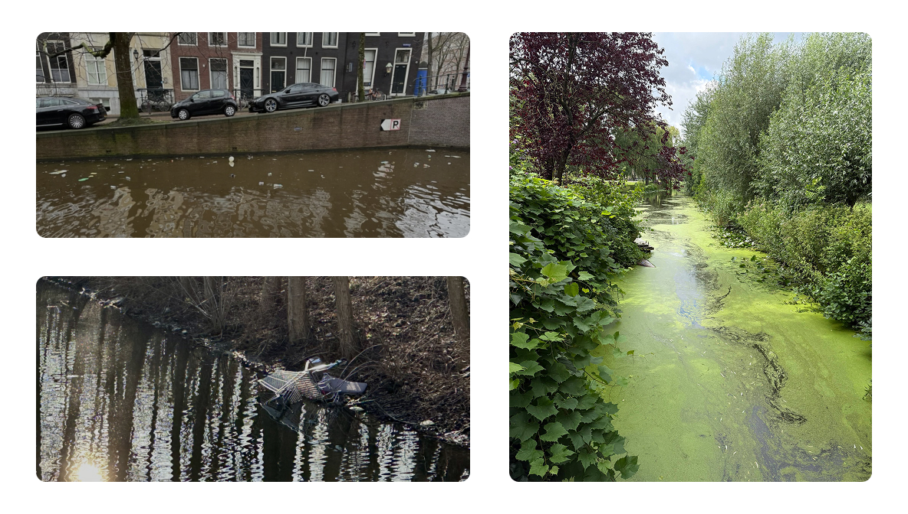
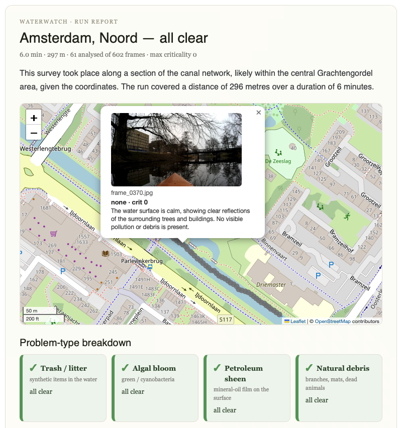

Integrated water-quality sensors
The boat can carry in-water sensors alongside its camera, so assessment doesn't stop at what's visible on the surface. Sensor readings and visual findings land in the same geo-tagged report.
AUTONOMOUS SURVEY BOAT · AMSTERDAM
Compact and 3D-printed, it patrols the canals on its own — filming the water, measuring it with onboard water-quality sensors, and turning every route into a clear report.
WHY A ROBOT
Amsterdam's canals are well kept, yet local problems still surface: floating waste, algal blooms, oil sheens. Across a network this large, catching them early is slow and expensive.
Autonomous boats remove the bottleneck. Several can run at once and cover the whole network — measuring far more densely, in space and in time.

TECHNOLOGY
Canals are busy: moving boats, floating objects, sudden obstacles. The boat fuses its sensors through ROS2 and steers itself along a given route with AI.
The boat can carry in-water sensors alongside its camera, so assessment doesn't stop at what's visible on the surface. Sensor readings and visual findings land in the same geo-tagged report.
RGB plus depth. Sees obstacles in 3D and films the water for analysis.
Every frame is stamped with time and position, so every finding has an address.
Heading and motion, for stable navigation between GPS fixes.
One robotics stack ties sensors, control and logging together.
A custom, lightweight model steers past traffic and obstacles in real time.
About 1.5 m long. Small enough for narrow canals, cheap enough to build a fleet.
Follows a route on its own, avoiding obstacles.
Video, frames and sensor data, all time- and geo-stamped.
A local vision model reads the footage, frame by frame.
One concise page: issues, locations, severity.
RIDE ALONG · SHORT CUT
This is a short excerpt of one multi-hour survey through Amsterdam-Noord — onboard-camera frames, each with its GPS fix, played back with the route. Press play or drag the slider.
ROUTE REPORTS
Even one route produces hours of video and sensor readings. Reviewing that by hand is a bottleneck of its own — so the boat's footage is analysed automatically and condensed into a short report.

GROUNDED IN SCIENCE
Severity isn't a vibe. Every assessment is anchored in established environmental frameworks.
Raw vision models give subjective scores. Grounding them in real standards makes reports consistent and comparable.
A bicycle on the quay is Amsterdam. A bicycle in the canal is pollution. The model reads the scene — and isn't limited to a fixed list of classes.
“A bulky human-made object, partially submerged” is now simply “a shopping cart”. Reports are written for people.